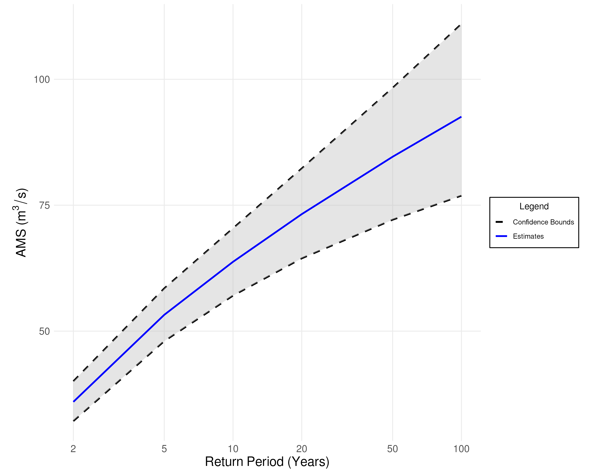
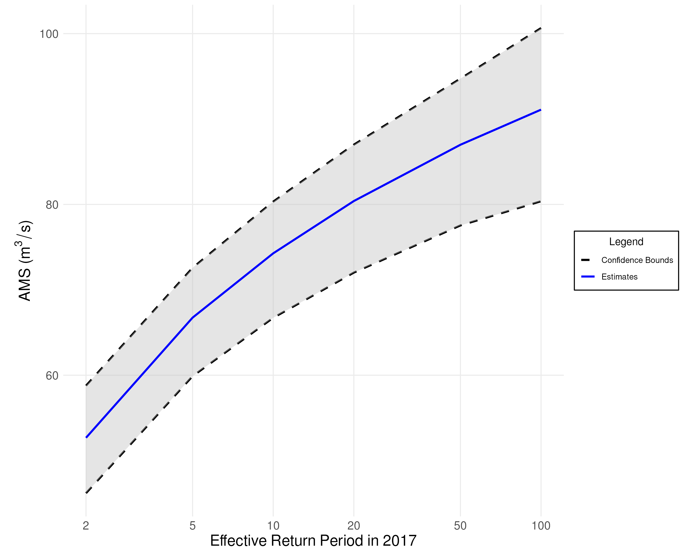

Flood Frequency Analysis (FFA)
Overview
<<<<<<< HEAD Flood Frequency Analysis (FFA) uses a probability distribution fitted to extreme streamflow observations (e.g., annual maxima) to estimate the recurrence likelihood of floods. To perform FFA, we require a probability model and corresponding parameter estimates based on the data.
FFA relates flood peak magnitudes \(Q\) to their expected frequency of occurrence, expressed as a return period. For example, a flood with a 10-year return period—commonly referred to as a 10-year flood—has a 1-in-10 chance of being equalled or exceeded in any given year. This corresponds to an annual exceedance probability \(p_e = 0.1\).
Since the FFA Framework uses annual maxima data, this equates to the 90th percentile (i.e., the \(0.90\) quantile) of the fitted probability distribution.
=======
FFA uses a fitted probability distribution to make predictions about the frequency of extreme streamflow events (i.e., floods).
To do this, we require a probability model fitted to the sample.
Typically, we describe the severity of floods in terms of their return period. Suppose we have a flood, referred to as \(Q\). If we expect to see a flood at least as severe as \(Q\), every ten years, then we say that \(Q\) is a ten-year flood. Since the FFA framework uses annual maximum series data, a ten-year flood corresponds to an exceedance probability of \(0.1\). Note that an exceedance probability of \(0.1\) corresponds to the \(1 - 0.1 = 0.90\) quantile (non-exceedance probability) of our distribution. Here is a table of the return periods, exceedance probabilities, and quantiles used in the FFA framework:
development
Here is a summary of return periods, exceedance probabilities, and associated distribution quantiles used in the FFA framework:
| Return Period (\(T\)) | Exceedance Probability (\(p_e\)) | Quantile ( \(F(q)\) ) |
|---|---|---|
| 2 Years | 0.50 | 0.50 |
| 5 Years | 0.20 | 0.80 |
| 10 Years | 0.10 | 0.90 |
| 20 Years | 0.05 | 0.95 |
| 50 Years | 0.02 | 0.98 |
| 100 Years | 0.01 | 0.99 |
Let \(F(q)\) be the cumulative distribution function (CDF) of the fitted model. This function maps flood magnitudes to exceedance probabilities: \(p_e = 1 - F(q)\).
To estimate flood magnitudes for a given exceedance probability, we use the inverse CDF, or quantile function: \(\hat{q} = F^{-1}(p_e)\).
<<<<<<< HEAD
Example Plot
FFA results are typically visualized with return period on the \(x\)-axis and flood magnitude on the \(y\)-axis. These plots can be interpreted in two directions:
-
Estimate flood magnitude for a given return period
Example: A 50-year flood is estimated to be about \(85\ \text{m}^3/\text{s}\). -
Estimate return period for a given flood magnitude
Example: A streamflow of \(50\ \text{m}^3/\text{s}\) is expected to occur roughly every 4 years. ======= Suppose our fitted probability distribution has a cumulative distribution function \(F(x)\). The function \(F(x)\) maps annual maximum flood magnitudes to quantiles/non-exceedance probabilities. However, we want to determine flood magnitudes from the quantiles/non-exceedance probabilities, so we use the inverse of the cumulative distribution \(F^{-1}(x)\) instead. The function \(F^{-1}(x)\) is also known as the Quantile Function.
Example Plot
We typically present the results of a flood frequency analysis as a graph with time on the \(x\)-axis and annual maximum series on the \(y\)-axis. There are two ways to read a graph like this:
- Estimate the severity of a flood for a given time period. From the graph below, we could determine that every 50 years, we can expect a flood of approximately \(85\text{m}^3/\text{s}\).
- Estimate the frequency of a flood for a given severity.
From the graph below, we could determine that a flood of \(50\text{m}^3/\text{s}\) or higher will occur every 4 years.
development

Note: For an explanation of the confidence bounds in this plot, see Uncertainty Quantification.
<<<<<<< HEAD
Handling Nonstationarity
A distribution is considered nonstationary if its statistical properties (e.g., mean or variance) change over time. In such cases, the quantile function becomes time-dependent: \(F^{-1}(p_e, t)\).
As a result, return levels and exceedance probabilities vary with time, and a static return period curve is no longer valid.
To address this, the FFA framework computes effective return periods, which yield flood estimates for a specific year based on the time-varying distribution.
Handling Nonstationarity
We say that a distribution is Nonstationary if its mean or variance (or both) are changing over time. Under nonstationarity, the quantile function of our fitted probability distribution is also a function of time \(F^{-1}(x, t)\). This means that our estimates and return periods also vary with time, so we cannot report a single set of estimates and confidence intervals as we did in the plot above. For nonstationary models, the FFA framework computes Effective Return Periods, which are estimates based on the quantile function for a specific year.
development
Example Plot
The plot below illustrates effective return levels for the year 2017.
<<<<<<< HEAD
Note: A 100-year effective return level does not imply that such a flood is expected to occur once in the next 100 years. It means that in the year 2017, the probability of exceeding that flood magnitude is 1 in 100.

======= Note: A flood with an effective return period of 100 years will not occur every 100 years due to the nonstationarity of the model. Instead, an effective return period of 100 years means that in the anchor year (2017), we predict there is a \(1/100\) probability of a flood with the given severity.
development